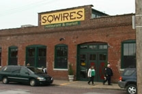

Choosing our reception site was a labor intensive activity. Initially, we knew exactly what we wanted-- an outdoor reception in Paige's aunt's backyard. As we began to get tent assessments and consider St. Louis weather in June, our excitement began to shift to worry. We want each and everyone of our guests to have an amazing time, and a sticky un-air-conditioned tent doesn't seem to promote dancing and merriment. Thus, we readjusted our mental image and went reception site seeking.
Paige knew she wanted a relaxed environment, and Nate knew he wanted good food. Carpeted venues were dismissed, "chicken or beef" menus were trashed, and anyplace with a portrait of the Queen of England hanging on the wall was deemed far too stuffy. At about 9pm on "wedding planning weekend" we finally found the perfect fit. They offered a venue with the perfect mix of unfinished charm and innovative catering (and they served us free wine while we made our decision!).
Our reception will be held at Sqwires Annex in Lafeyette Square. The reception will be cocktail style (no stuffy assigned seating), and the food is a delicious mix of appetizers and smaller sized choices. We assure you there will be enough food to feel full, despite there being no sit down dinner. (Sometime soon we will add a menu to this section so you can see what will be offered.) Food will begin to be displayed at 7pm and the fun should last well into the night. We are so excited to share an amazing celebration with all those we love! Bring your dancing shoes...
If you are interested in getting to the reception area early, Lafayette Square offers a lot of great options for you to enjoy as you wait for the evening activites to begin. Below, are a few of our favorites!